SEE THE FORM
UNDERSTAND THE PROJECT
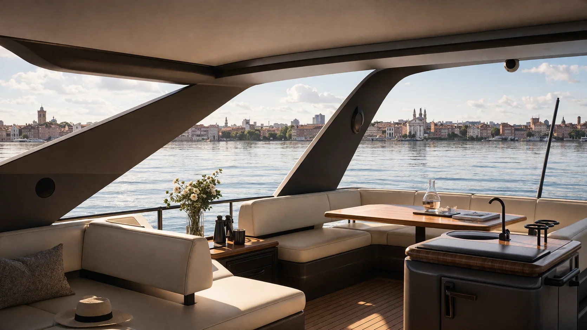
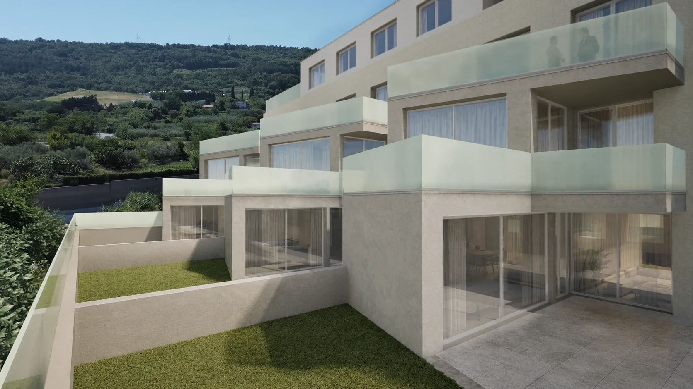
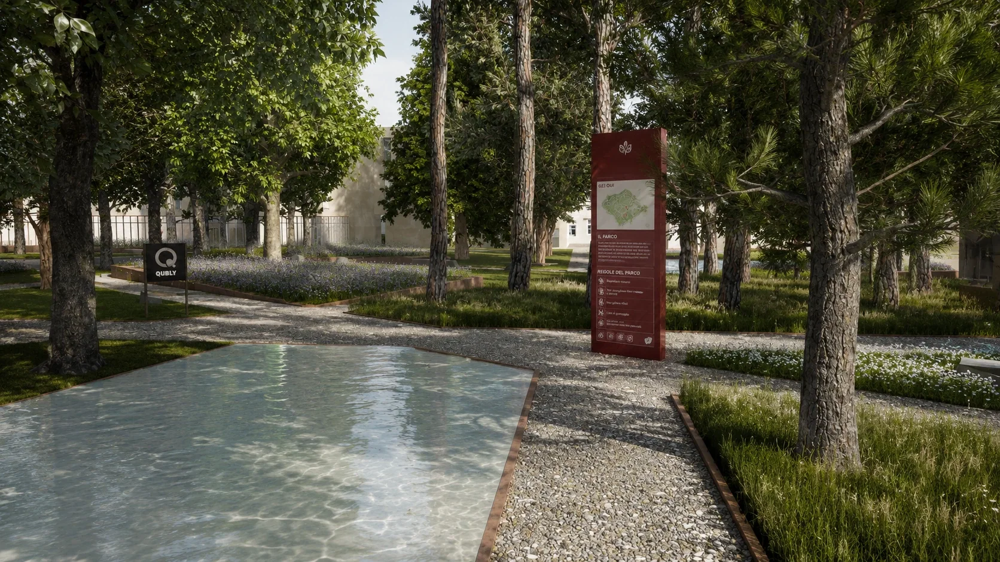
QUANDO LA CHIAREZZA GUIDA LE DECISIONI
QUANDO LA CHIAREZZA GUIDA LE DECISIONI
Design transition to reality
Before
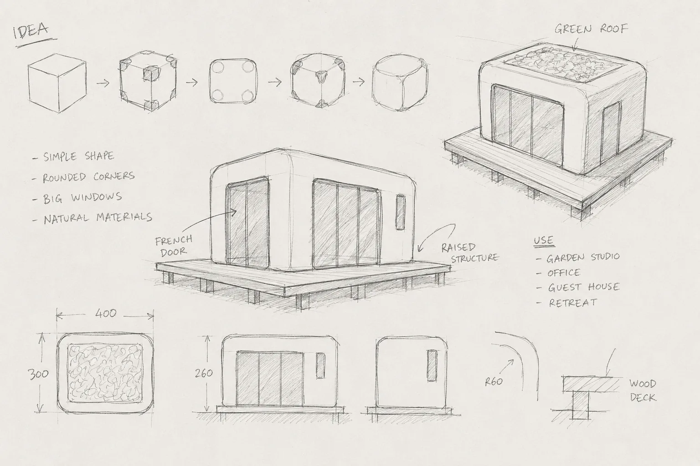
Drawings explain structure, but they don’t communicate how the architecture will actually look and feel in reality.
After
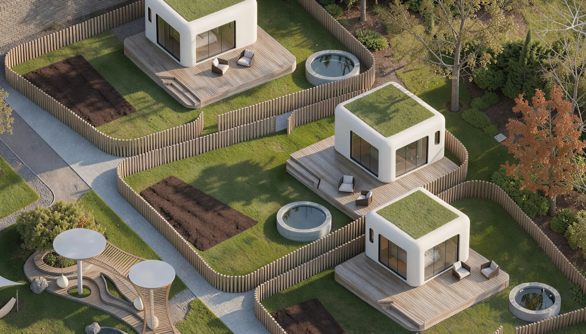
Architectural visualizations that turn 2D intent into clear, tangible spatial reality.
From project to image
Before
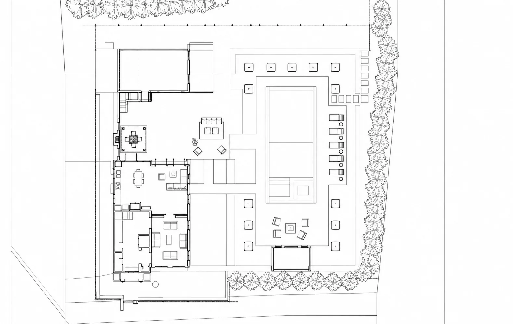
A project can be precise and complete, but still difficult to read without a clear visual translation.
After
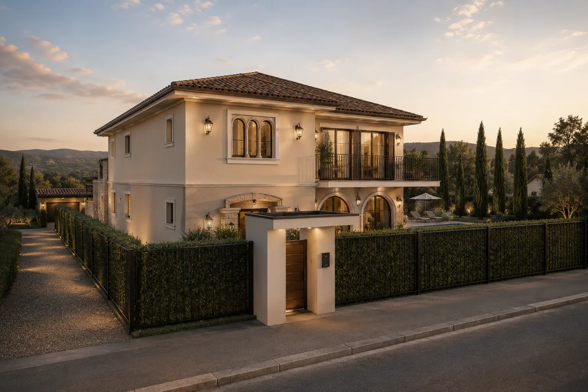
Images that turn the project into an immediate, readable and communicative architectural vision.
From model to image
Before
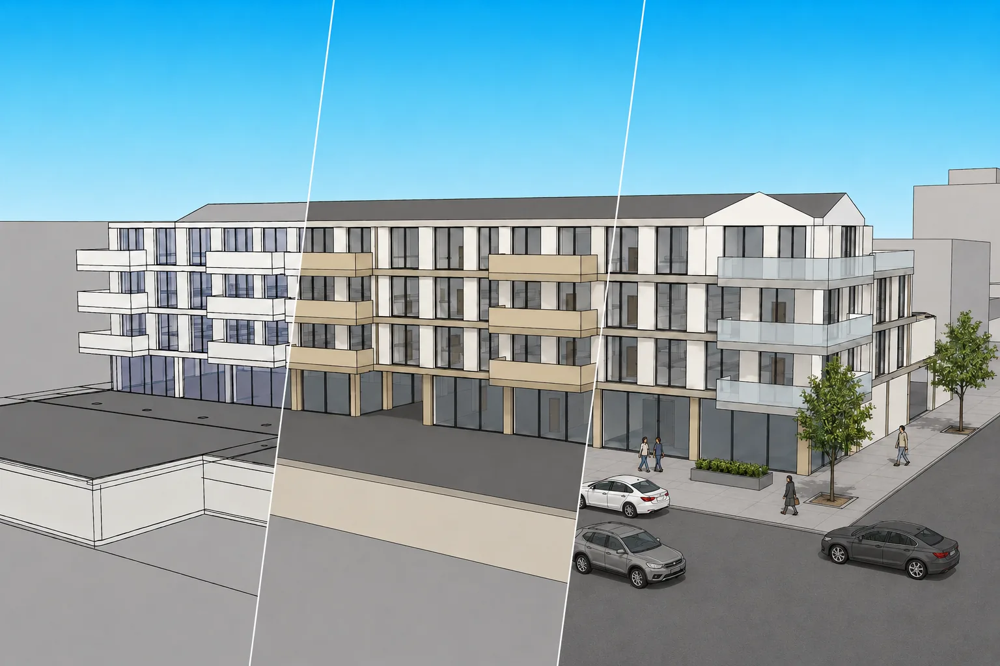
A model defines volumes and proportions, but it does not yet express atmosphere, materials and light.
After
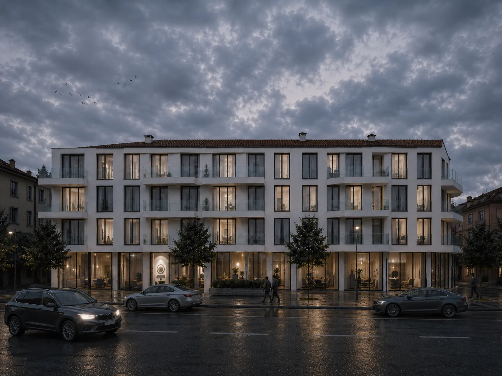
Rendered images that transform the model into a complete visual experience, ready to communicate.
Interior decisions
Before
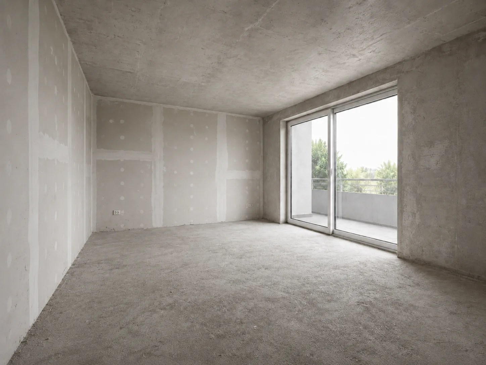
Sometimes there is only an empty space, or just a project on paper, and it has to be sold before anyone can imagine living in it.
After
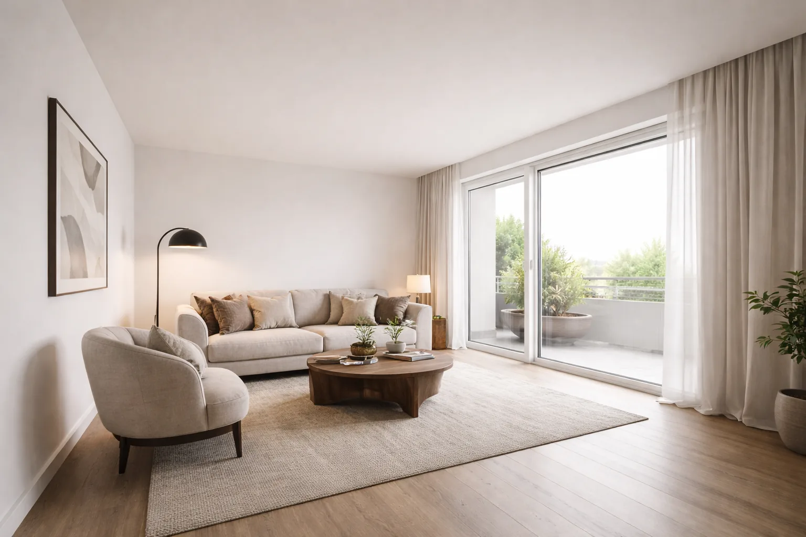
Photoreal visualizations that transform vacant or unbuilt spaces into desirable, market-ready environments that make purchase decisions easier.
Photomontage of your project
Before
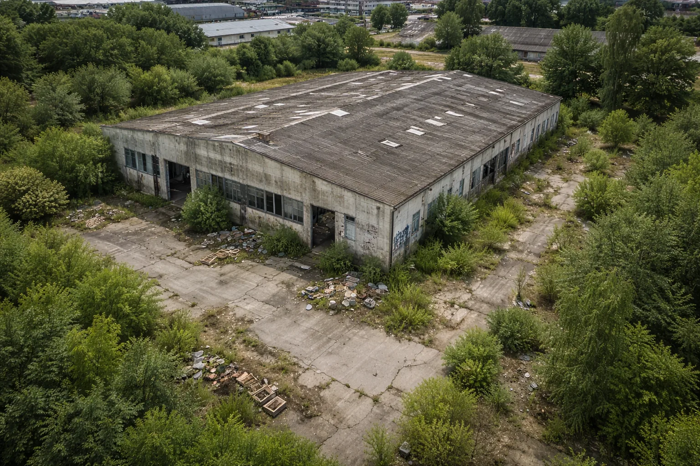
Existing buildings and sites don’t communicate their future potential.
After
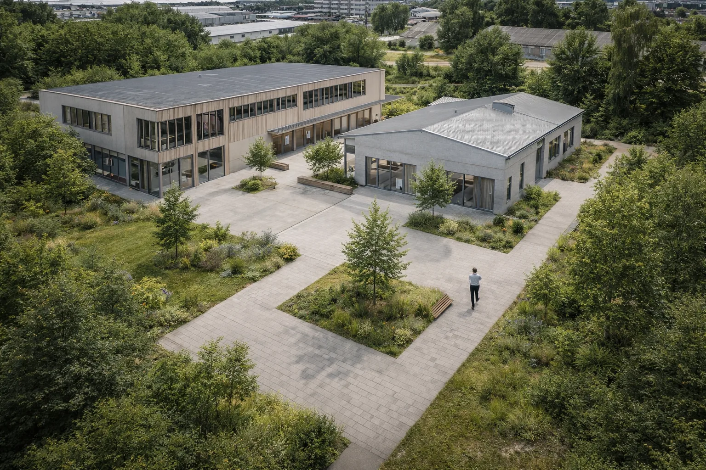
Contextual photoinsertions that show the transformation as if it already exists.
Design options and material comparison
Before
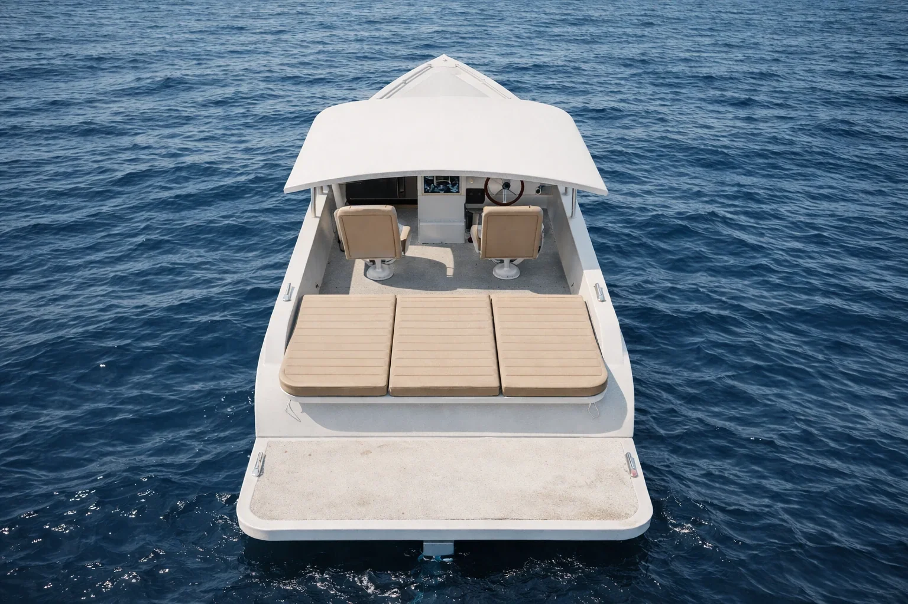
Comparing finishes and alternatives is abstract without seeing them side by side.
After
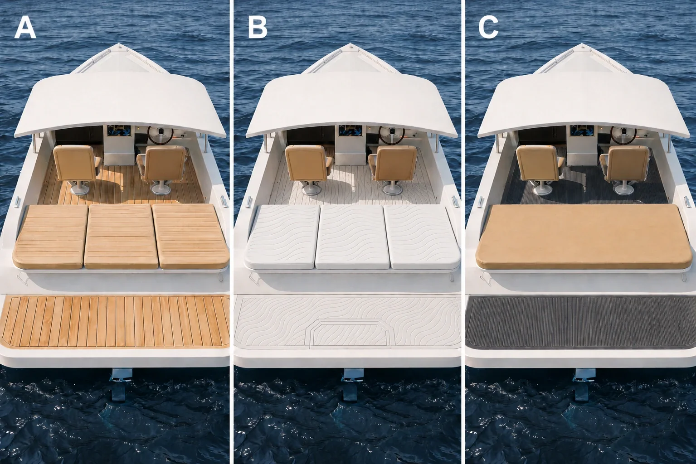
Consistent comparative renders that make choices immediate and concrete.
PROJECTS
CONTACT
Turning architectural ideas into visual reality.
For project proposals and collaborations, email us.